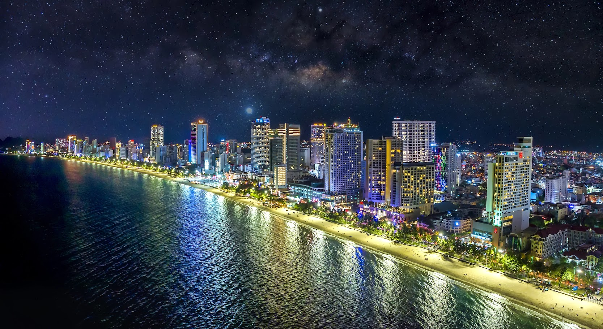
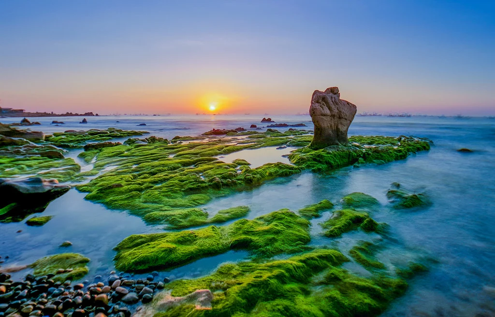
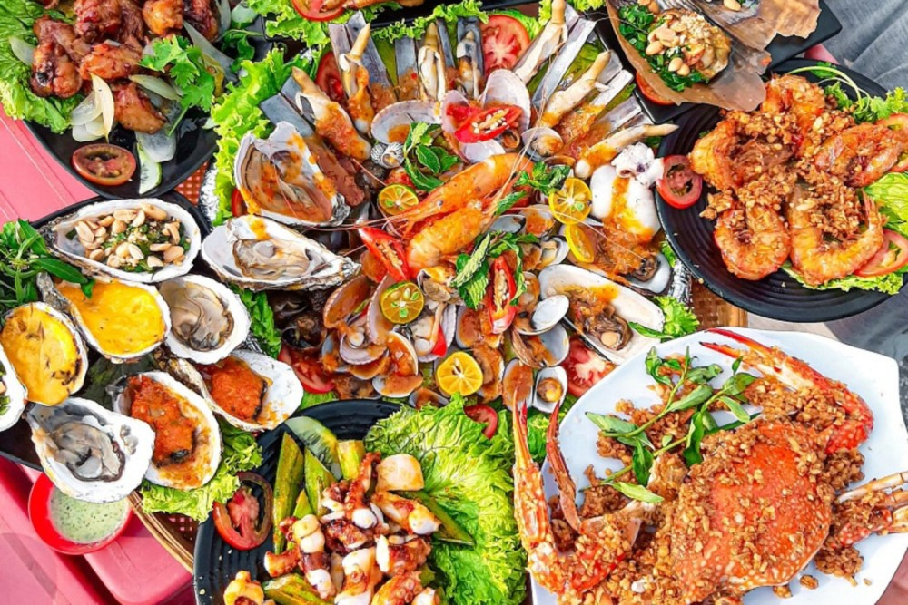
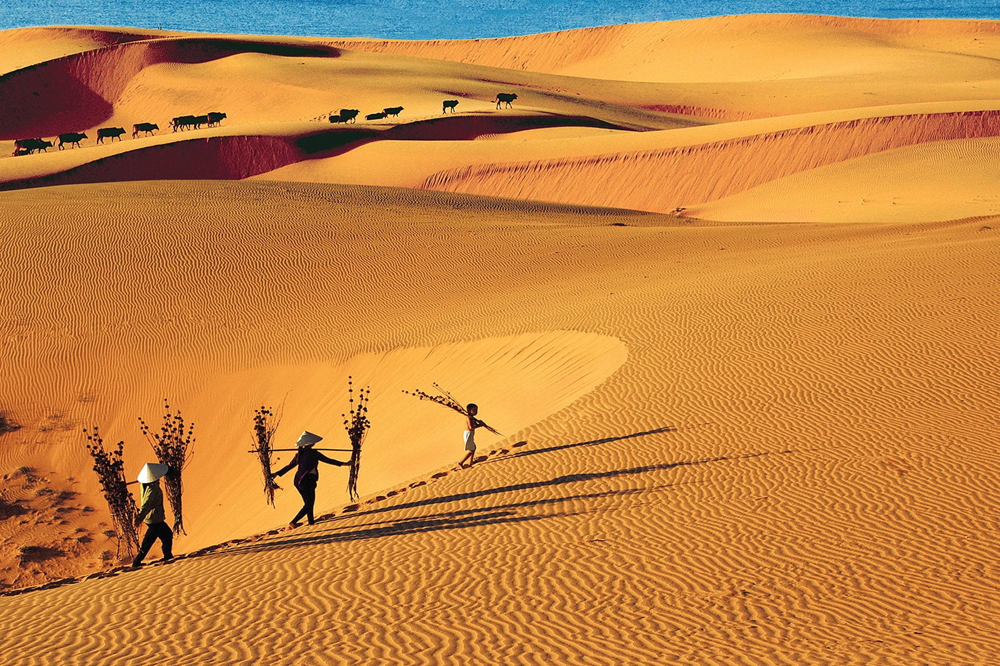
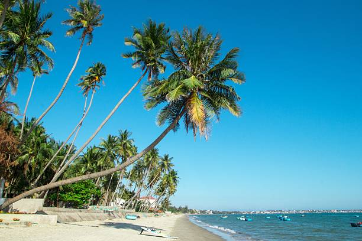

Du khách nên ghé Đồi Cát Bay để ngắm cảnh, chụp ảnh và thử trượt cát – một hoạt động thú vị đặc trưng của Mũi Né.
Ngoài ra, Suối Tiên với dòng nước đỏ cam và cảnh quan độc đáo cũng là điểm đến không nên bỏ lỡ.
Mũi Né nổi tiếng với bãi biển dài, nước trong xanh và nhiều khu resort đẹp, thích hợp để nghỉ dưỡng.
Ẩm thực nơi đây hấp dẫn với hải sản tươi sống, đặc biệt là các món nướng và lẩu mang đậm hương vị biển.
Mũi Né mang dấu ấn văn hóa Chăm Pa với các di tích như Tháp Chăm Poshanu cổ kính.
Đời sống ngư dân là một phần quan trọng trong văn hóa địa phương, thể hiện qua phong tục và sinh hoạt hàng ngày.
Các lễ hội truyền thống như lễ hội Cầu Ngư mang đậm nét tín ngưỡng vùng biển.
Sự giao thoa giữa văn hóa Chăm và văn hóa Việt tạo nên nét độc đáo riêng cho vùng đất này.
Mũi Né nổi bật với cảnh quan độc đáo giữa biển xanh và những đồi cát trải dài như sa mạc.
Đồi Cát Trắng và Đồi Cát Đỏ thay đổi hình dạng theo gió, tạo nên vẻ đẹp luôn mới mẻ.
Suối Tiên với màu nước đặc trưng và hai bên là vách cát đỏ tạo nên khung cảnh kỳ lạ.
Bình minh và hoàng hôn tại đây mang lại những khoảnh khắc rất thơ mộng và ấn tượng.
Mũi Né có khí hậu khô nóng, nhiều nắng và ít mưa, rất thuận lợi cho du lịch quanh năm.
Thời điểm đẹp nhất để ghé thăm là từ tháng 11 đến tháng 4 khi thời tiết dễ chịu hơn.
Người dân thân thiện, hiếu khách và mang nét chân chất của vùng biển miền Trung.




